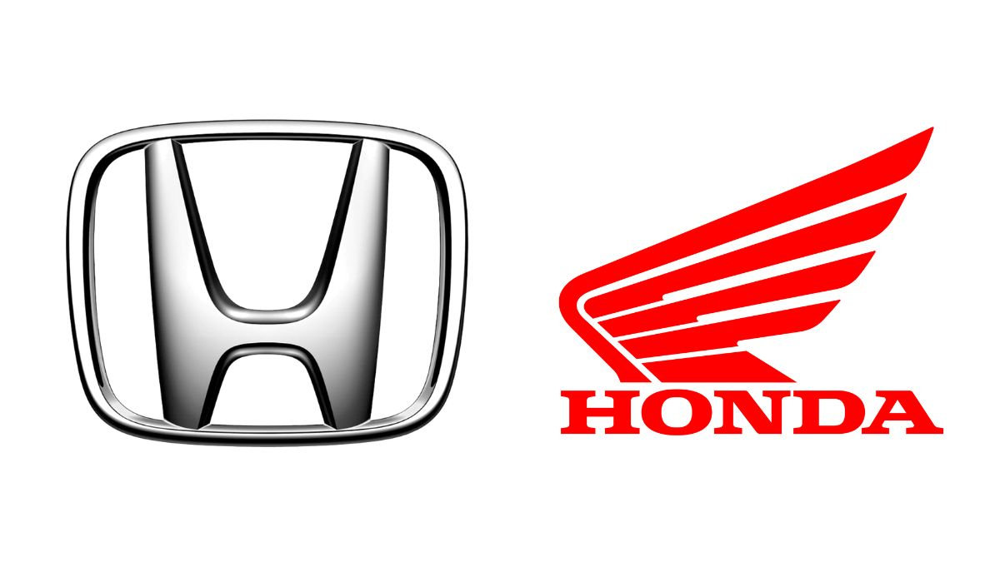

<!DOCTYPE html>
<html>
  <head>
    <meta charset="utf-8">
    <meta name="viewport" content="width=device-width, initial-scale=1.0" />
    <title>Cerita Terciptanya Honda</title>
    <link rel="stylesheet" href="assets/styles/style.css">
    <link rel="preconnect" href="https://fonts.googleapis.com">
    <link rel="preconnect" href="https://fonts.gstatic.com" crossorigin>
    <link href="https://fonts.googleapis.com/css2?family=Kanit:wght@300;600&display=swap" rel="stylesheet">
 </head>
  <body>   
 
  </body>
</html>
 <header>
  <div class="jumbotron">
  <h1>HONDA</h1>
   <p>
Pabrik otomotif jepang yang berawal dari membuat motor hingga membuat mobil.
   </p>
  </div> 
  <nav>
  <ul>
    <li>
        <a href="#sejarah">Sejarah</a>
       </li>
       <li>
        <a href="#Biografi Pendiri Honda">Biografi Pendiri Honda</a>
       </li>
       <li>
        <a href="#Kendaraan Pertama Honda">Kendaraan Pertama Honda</a>
       </li>
  </ul> 
</nav>
</header>

<main>

 <div id="content">
  <article id="sejarah" class="card">
    <h2>Sejarah</h2>
    
<p>
    Honda telah menjadi produsen sepeda motor terbesar di dunia sejak tahun 1959,dengan berhasil memproduksi 400 juta unit sepeda motor hingga akhir tahun 2019,serta menjadi produsen mesin pembakaran dalam dengan volume produksi terbesar di dunia, dengan memproduksi lebih dari 14 juta unit mesin pembakaran dalam per tahun. Honda adalah produsen mobil terbesar kedua di Jepang pada tahun 2001. Honda juga merupakan produsen mobil terbesar kedelapan di dunia pada tahun 2015.Honda adalah produsen mobil asal Jepang pertama yang meluncurkan merek mobil mewah tersendiri, yakni Acura, pada tahun 1986. Selain memproduksi mobil dan sepeda motor, Honda juga memproduksi peralatan kebun, mesin kelautan, kendaraan air pribadi, generator listrik, dsb. Sejak tahun 1986, Honda telah terlibat di riset kecerdasan buatan atau robotik, dan meluncurkan robot ASIMO pada tahun 2000. Honda juga berekspansi ke sektor dirgantara dengan mendirikan GE Honda Aero Engines pada tahun 2004 dan mulai memproduksi Honda HA-420 HondaJet pada tahun 2012. Honda memiliki dua joint venture di Tiongkok, yakni Dongfeng Honda dan Guangqi Honda.
</p>
<p> 
    Nama Honda diambil dari salah satu marga dari pendirinya, yaitu Soichiro Honda. Honda dirintis oleh Soichiro Honda and Takeo Fujisawa pada 1945 dan mulai resmi dikenalkan sebagai perusahaan yang terdaftar pada 1948.
 </p>
</article>

<article id="Biografi Pendiri Honda" class="card">
    <h2>Biografi Pendiri Honda</h2>
    
<p>
    Soichiro Honda adalah seorang industrialis Jepang yang dilahirkan di Hamamatsu, Shizuoka, Jepang. Honda menghabiskan masa kecilnya membantu ayahnya dalam bisnis reparasi sepeda. Pada saat 15 tahun, tanpa pendidikan formal, Honda pindah ke Tokyo untuk mencari kerja. Dia bekerja magang di sebuah bengkel pada 1922, dan setelah mempertimbangkan pekerjaannya, ia tetap bekerja di sana selama enam tahun lagi sebelum kembali ke kampung halamannya untuk memulai usaha reparasi mobilnya pada 1928 dalam usia 22 tahun.
 </p>
<p>
 
    Pada 1948 Honda memulai produksi sepeda motor sebagai presiden Honda Corporation. Honda mengubah perusahaan tersebut menjadi sebuah perusahaan multinasional berharga milyaran yang memproduksi sepeda motor terlaris di dunia.
 </p> 
</article>

<article id="Kendaraan Pertama Honda" class="card">
    <h2>Kendaraan Pertama Honda</h2>
   <p>
    Pada tahun 1937, Soichiro Honda mendirikan perusahaan kecil bernama Tokai Seiki, yang memproduksi cincin penghubung piston untuk pabrikan mobil besar. Namun, bisnisnya mengalami kesulitan selama Perang Dunia II karena persediaan logam yang terbatas. Honda bahkan terpaksa menggunakan kayu sebagai bahan pengganti logam untuk membuat cincin penghubung piston.
  </p>
  <p>
    Setelah perang berakhir, Honda memutuskan untuk memanfaatkan sisa-sisa mesin perang untuk membangun motor. Dengan tekad yang kuat, ia merakit motor pertamanya yang disebut "Honda Type A" di gudang kayu kecil. Motor ini tidak hanya merupakan kendaraan sepeda motor pertama yang dirakit oleh Honda, tetapi juga merupakan sepeda motor pertama yang dilengkapi dengan mesin pendorong pribadi buatan Honda.
  </p>
 

  <section>
    <h3>Motor pertama Honda</h3>
    
    <p>
        Honda Type A dirilis pada tahun 1947 dan mendapatkan perhatian positif dari masyarakat. Ini adalah langkah awal dalam perjalanan panjang menuju kesuksesan Honda sebagai produsen sepeda motor terkemuka di dunia. Selama bertahun-tahun, Honda terus berinovasi dan mengembangkan teknologi baru dalam industri otomotif, termasuk mesin empat tak dan teknologi CVCC yang ramah lingkungan.
    </p>
  </section>

  <section>
    <h3>Mobil pertama Honda</h3>
    
    <p>
        Pada bulan Agustus 1963, Honda mulai menjual mobil pertamanya, yakni truk pick-up mini T360. Karena ditenagai dengan mesin bensin berkapasitas 356 cc, mobil tersebut pun diklasifikasikan sebagai mobil kei. 
    </p>
  </section>
</article>
</div>


<aside>
  <article class="profile card">
    <header>
<h2>Pencipta Artikel</h2>
  <p>Tengku Arya Arza</p>
  <figure>
    
    <figcaption>Pencipta</figcaption>
  </figure>
</header>
 
    <section>
      <h3>Informasi Lainnya</h3>
 
      <table>
        <tr>
          <th>Kelahiran</th>
          <td>Medan, Indonesia</td>
        </tr>
        <tr>
          <th>Tanggal lahir</th>
          <td>5 april 2002</td>
        </tr>
        <tr>
          <th>Asal Universitas</th>
          <td>Universitas Sumatera Utara</td>
        </tr>
        <tr>
          <th>No. Telepon</th>
          <td>081236895454</td>
        </tr>
        <tr>
          <th>Motto Hidup</th>
          <td>"Nothing is impossible"</td>
        </tr>
      </table>
    </section>
  </article>
 </aside>
</main>


<footer>
    <p>Terciptanya Honda &#169; 2023, Dicoding Academy</p>
  </footer>
 </body>
</html>